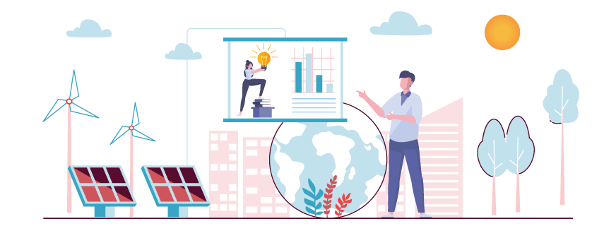

Lucha contra el cambio climático
El acuerdo alcanzado en París en 2015 fue adoptado por 196 países para limitar el calentamiento mundial por debajo de 2 grados centígrados en comparación con niveles preindustriales. Para alcanzar ese objetivo, se propone reducir las emisiones de gases de efecto de invernadero, para lograr un planeta con clima neutro para mediados de siglo.

Dentro del Marco sobre Clima y Energía para el año 2030, la Unión Europea tiene ambiciosos objetivos:
- Reducir las emisiones de GEI al menos un 55% con respecto a 1990.
- Elevar la cuota de renovables en el consumo de energía final por encima del 32%.
- Mejorar la eficiencia energética en al menos un 32,5%.
Con este propósito, el Gobierno de España proporciona subvenciones a viviendas que cumplan estos requisitos. Las ayudas se aplican inmediatamente si el consumo energético de una vivienda se ve reducido en los 3 últimos meses. La subvención es mayor cuanto mayor es el porcentaje de mejora. Una vez concedida la ayuda, si el consumo de una vivienda vuelve a subir, la ayuda es eliminada.
Esta medida, ha despertado el interés de muchísimas familias por mejorar su sostenibilidad, para lo que recurren a empresas expertas en el tema.